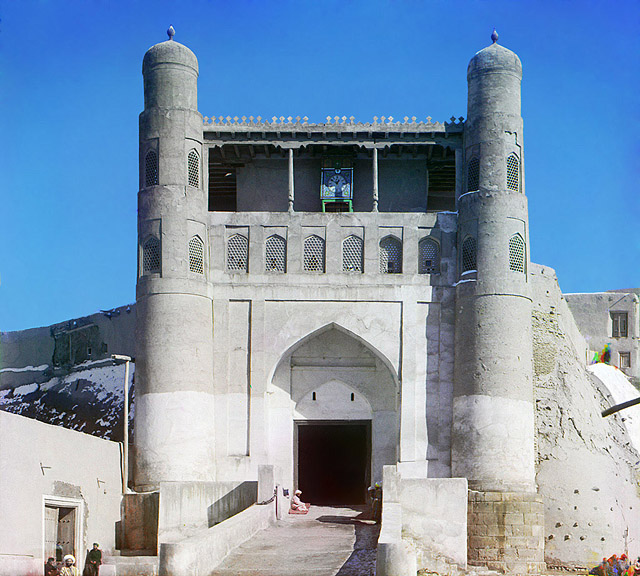

Бухарские мухаджиры: узбекская диаспора в Турции и Саудовской Аравии
Падение Бухарского эмирата в 1920 году, басмаческое движение и советская политика вынудили тысячи центральноазиатов эмигрировать — через Афганистан — в Хиджаз (Саудовскую Аравию) и Турцию. Формирование «туркестанских»/«бухарских» общин, с датами и источниками.

Сегодняшняя узбекская диаспора — это не только трудовая миграция после независимости. Задолго до неё — с 1920-х годов — падение Бухарского эмирата, подавление басмаческого движения и советская антирелигиозная политика вынудили тысячи центральноазиатов покинуть родину и эмигрировать через Афганистан в Хиджаз (нынешнюю Саудовскую Аравию) и Турцию. Ниже изложено формирование этих исторических общин «мухаджиров», с датами, на основе научных и справочных источников.
Падение Бухарского эмирата
Последний эмир, Сайид Алим-хан (Саид Мир Мухаммад Алим-хан, родился в 1880 году), правил с 1911 по 1920 год. 2 сентября 1920 года Красная армия под командованием Михаила Фрунзе напала на Бухару, и после нескольких дней боёв цитадель Арк пала. Эмир бежал сначала в сторону восточной Бухары (нынешний Таджикистан), затем в Кабул (Афганистан), где умер 28 апреля 1944 года.
Басмаческое движение и волны беженцев
Вооружённое сопротивление советской власти — басмаческое движение — длилось примерно с 1918 до начала 1930-х годов; на пике (1920–1922) число повстанцев оценивается в 20 000–30 000 человек, они боролись против коллективизации с баз в Афганистане. По данным научных источников, между 1917 и 1926 годами около 480 000 таджиков, узбеков, туркмен, казахов и киргизов покинули Центральную Азию, преимущественно в Афганистан. Причинами были национализация земли, закрытие мечетей, медресе и вакфов, упразднение шариатских судов и кампания «худжум» (снятие паранджи).
В Саудовскую Аравию (Хиджаз)
Из Афганистана и по маршрутам паломничества часть эмигрантов перебралась в Хиджаз — Мекку, Медину, Джидду и Таиф. Волнами с 1930-х по 1950–1960-е годы сложилась «туркестанская»/«бухарская» община, с новым притоком в 1980-е годы. В научной литературе квартал «Бухария» в Медине (Хайй/Шари аль-Бухария) задокументирован как реальный район, связанный с этими эмигрантами.
В Турцию (Стамбул, Зейтинбурну)
В Турции центральноазиатские (туркестанские) эмигранты в течение XX века образовали общины в стамбульском районе Зейтинбурну, а также в Кайсери, Измире и Анкаре. Задокументированные более поздние волны: в 1981 году многие афгано-узбекские беженцы из Пакистана переехали в Турцию, чтобы присоединиться к существующим общинам; в 1982–1983 годах Турция приняла около 3000–4000 афганских беженцев тюркского происхождения (туркмены, киргизы, узбеки, хазарейцы), сначала близ озера Ван, а затем в сторону Стамбула. Точные цифры за ранний период (1920–1930-е годы) в Турции твёрдо не задокументированы; надёжные числа относятся к волнам 1981–1983 годов.
Самоназвание «туркестанец» или «бухарец»
Многие эмигранты называли себя не «узбеками» или «таджиками», а «туркестанцами» или «бухарцами» — потому что эти имена были знакомы и уважаемы за рубежом, особенно в Саудовской Аравии («Бухари» напоминало о Бухаре, родине великого учёного-хадисоведа Имама аль-Бухари). По прибытии (1930–1960-е годы) они часто представляли себя религиозными эмигрантами (мухаджирами), что повышало их шансы на приём.
Размер общины сегодня
Точный размер общины сегодня неизвестен — надёжной переписи нет, и оценки различаются. Узбекскую диаспору в Турции оценивают примерно в 70 000 человек (эта цифра может объединять исторических эмигрантов и более поздних прибывших). Оценки по Саудовской Аравии широко разнятся — от 300 000 (около 2009 года) до 1 миллиона; это приблизительные данные. Исторический факт: в 1909 году в Мекке было около 20 000 тюрок (около 13% города).
Примечание
Эта статья основана на фактах из научных и справочных источников. Важные различия: мусульманский квартал «Бухария» в Медине не следует путать с «Бухарским кварталом» в Иерусалиме (бухарско-еврейский район, основанный в 1890-х годах); а в Саудовской Аравии термин «туркестанец» иногда относится и к уйгурам. Источники: Cambridge/IJMES («Hijra from the Russian Empire and the Soviet Union»), исследования Байрама Балджи (REMI), Encyclopedia.com (басмачи), Wikipedia («Сайид Мир Мухаммад Алим-хан», «Узбеки в Турции») и Cultural Survival.
Источники
- Cambridge / IJMES — "Hijra from the Russian Empire and the Soviet Union" (~480,000 fled 1917–1926; routes to the Hijaz; Bukhariyya quarter)
- Bayram Balci — "The Uzbek Community in Saudi Arabia between Assimilation and Renewed Identity" (REMI, 2003)
- Wikipedia — Sayyid Mir Muhammad Alim Khan (reign 1911–1920; Bukhara falls 2 Sept 1920; d. 28 April 1944, Kabul)
- Encyclopedia.com — Basmachi movement (1918–early 1930s; 20,000–30,000 rebels at peak)
- Wikipedia — Uzbeks in Turkey (Zeytinburnu, Kayseri, İzmir, Ankara; 1981 Pakistan→Turkey move; ~70,000)
- Cultural Survival — "Afghanistan's Kirghiz in Turkey" (1982–1983 resettlement of Turkic-origin Afghan refugees)